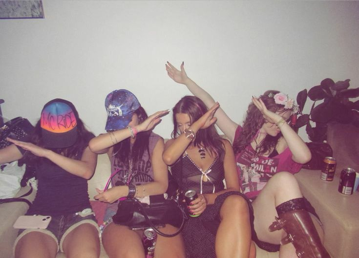

Bem Vindo(a)
Club Nostalgia é um refúgio no tempo. Um lugar feito para relembrar os anos que deixaram saudade — de 2012 a 2019, quando a internet era mais leve, as músicas marcavam momentos e cada foto tinha um filtro com história. Aqui, a gente celebra os dias em que o “curtir” significava conexão verdadeira, quando os memes eram simples, os stories eram novidade e o mundo digital parecia um grande encontro entre amigos. Reviva as músicas que embalaram sua adolescência, os filmes que definiram gerações e as lembranças que o tempo não conseguiu apagar. Porque recordar não é apenas lembrar — é sentir outra vez.
A Moda entre 2012 e 2019 — A Era das Tendências Digitais
De 2012 a 2019, a moda viveu uma revolução. Foi o tempo em que a internet deixou de apenas influenciar o que vestíamos e passou a ditar tendências. Cada look refletia um momento, um meme ou uma fase da vida digital. No começo da década, o estilo era colorido e cheio de atitude. As calças vibrantes, os tênis Vans, as camisas xadrez e os croppeds dominaram as ruas, enquanto o estilo “Tumblr” começava a ganhar força, com fotos retrô, short jeans e aquele ar despretensioso. Com o tempo, o visual ficou mais limpo e confortável: jeans rasgado, camisetas básicas, all star branco e chokers marcaram a moda entre 2014 e 2016. Era a época do minimalismo estiloso, quando o “menos é mais” virou regra — mas sem perder a personalidade. Logo vieram os anos das influencers, entre 2016 e 2017, com a explosão do Instagram. O visual passou a ser pensado para as fotos: looks ajustados, tons neutros, maquiagem marcada e o estilo esportivo-chique, o famoso athleisure, tomaram conta das ruas e redes sociais. Já entre 2018 e 2019, a moda se reinventou com nostalgia. O passado voltou com força: mom jeans, pochetes, jaquetas oversized, tênis chunky e referências aos anos 90 e 2000. Surgiram os estilos VSCO girl, E-girl e Soft girl, mostrando que vestir-se era, acima de tudo, uma forma de expressão. Essa foi a década em que a moda se tornou pessoal, digital e livre. Um tempo em que cada roupa contava uma história e cada tendência carregava uma lembrança.
✨ De calças coloridas a filtros vintage — 2012 a 2019 foi a era em que estilo e nostalgia andaram de mãos dadas.